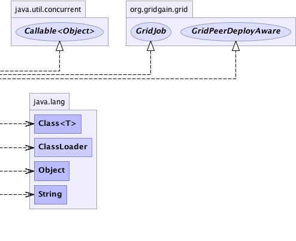

org.gridgain.grid.lang.GridMetadataAwareAdapter
org.gridgain.grid.GridJobWrapper
org.gridgain.grid.lang.GridMetadataAwareAdapter
org.gridgain.grid.GridJobWrapper
|
GridGain™ 3.6.0c
Community Edition |
|||||||||
| PREV CLASS NEXT CLASS | FRAMES NO FRAMES | |||||||||
| SUMMARY: NESTED | FIELD | CONSTR | METHOD | DETAIL: FIELD | CONSTR | METHOD | |||||||||
java.lang.Object
public class GridJobWrapper
Convenient wrapper for grid job. It allows to create a job clone in cases when the same job needs to be cloned to multiple grid nodes during mapping phase of task execution.
| Wiki | |
| Forum |
 |
 |
| Constructor Summary | |
|---|---|
GridJobWrapper(GridJob job,
boolean copyMeta)
Creates a wrapper with given grid job. |
|
| Method Summary | |
|---|---|
Object |
call()
|
void |
cancel()
This method is called when when system detects that completion of this job can no longer alter the overall outcome (for example, when parent task has already reduced the results). |
ClassLoader |
classLoader()
Gets class loader for the class. |
Class<?> |
deployClass()
Gets top level user class being deployed. |
Object |
execute()
Executes this job. |
String |
toString()
|
GridJob |
wrappedJob()
Gets wrapped job. |
| Methods inherited from class org.gridgain.grid.lang.GridMetadataAwareAdapter |
|---|
addMeta, addMetaIfAbsent, addMetaIfAbsent, allMeta, clone, copyMeta, copyMeta, hasMeta, hasMeta, meta, putMetaIfAbsent, putMetaIfAbsent, readExternalMeta, removeMeta, removeMeta, replaceMeta, writeExternalMeta |
| Methods inherited from class java.lang.Object |
|---|
equals, finalize, getClass, hashCode, notify, notifyAll, wait, wait, wait |
| Constructor Detail |
|---|
public GridJobWrapper(GridJob job,
boolean copyMeta)
job. If job implements GridMetadataAware
interface and copyMeta is true - the metadata information will be
copied from given job to this wrapper.
job - Job to wrap.copyMeta - Whether or not to copy metadata in case when job
implements GridMetadataAware interface.| Method Detail |
|---|
public GridJob wrappedJob()
@Nullable
public final Object call()
throws Exception
call in interface Callable<Object>Exceptionpublic Class<?> deployClass()
deployClass in interface GridPeerDeployAwarepublic ClassLoader classLoader()
GridPeerDeployAware.deployClass() as well as all of its
dependencies.
Note that in most cases the class loader returned from this method
and the class loader for the class returned from GridPeerDeployAware.deployClass() method
will be the same. If they are not the same, it is required that the class loader
returned from this method still has to be able to load the deploy class and all its
dependencies.
classLoader in interface GridPeerDeployAwarepublic void cancel()
GridFuture.cancel() is called.
Note that job cancellation is only a hint, and just like with
Thread.interrupt() method, it is really up to the actual job
instance to gracefully finish execution and exit.
cancel in interface GridJob
public Object execute()
throws GridException
execute in interface GridJobGridException - If job execution caused an exception. This exception will be
returned in GridJobResult.getException() method passed into
GridTask.result(GridJobResult, List) method into task on caller node.
If execution produces a RuntimeException or Error, then
it will be wrapped into GridException.
null). This result will be returned
in GridJobResult.getData() method passed into
GridTask.result(GridJobResult, List) method into task on caller node.public String toString()
toString in class Object
|
GridGain™ 3.6.0c
Community Edition |
|||||||||
| PREV CLASS NEXT CLASS | FRAMES NO FRAMES | |||||||||
| SUMMARY: NESTED | FIELD | CONSTR | METHOD | DETAIL: FIELD | CONSTR | METHOD | |||||||||
|
GridGain - Real Time Big Data
|
|

|
|